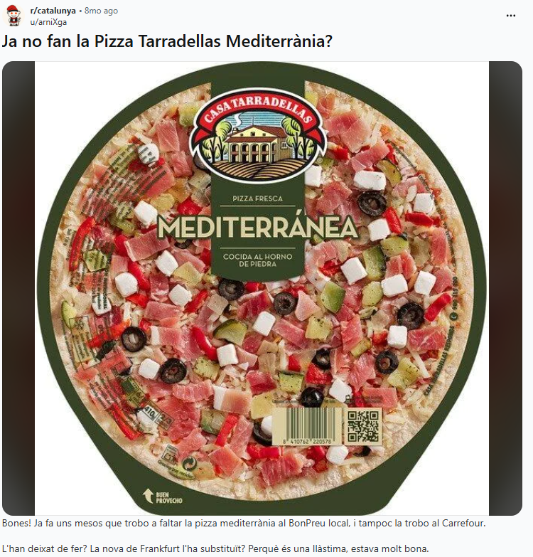

m'està començant a colpejar fort la ressaca emocional del post-vaga. quina violència tornar a la normalitat després d'un dia de vaga general. l'11N va ser molt emocionant, un tast de llibertat. tornar a treballar l'endemà a les vuit del matí un atemptat, un cop de realitat duríssim xd. personalment, vaig viure la vaga al meu centre de treball —i al comitè de la Barceloneta, pfff, el millor comitè, quina gent més maja.